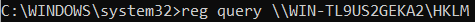
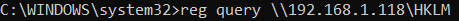

reg
reg command lets us interact with the Registry.
read registry
key
examples:
C:\> reg query HKLM\Software\Microsoft\Windows\CurrentVersion\Uninstall /s #installed applications
C:\> reg query HKLM\Software\WOW6432Node\Microsoft\Windows\CurrentVersion\Uninstall /s #installed 32-bit applications on a 64-bit host
change registry key
C:\> reg add [KeyName] /v [ValueName] /t [type] /d [Data]
export on file value of a registry keyA commonly observed convention is
store settings of the registry in files with extension .reg
C:\> reg export [KeyName] [filename.reg]
import registry key
C:\> reg import [filename.reg]
Remotelyreg commands
can be done
remotely by prepending \\[MachineName] before [KeyName].
To do that an admin-level SMB session is
required(to do it
see
net→ SMB share)
 Bibliography:
https://pwn.no0.be/admin/windows/registry/